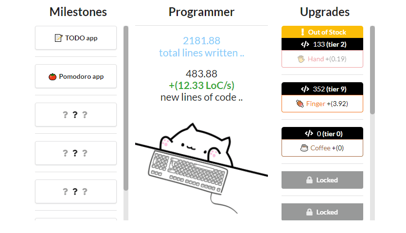
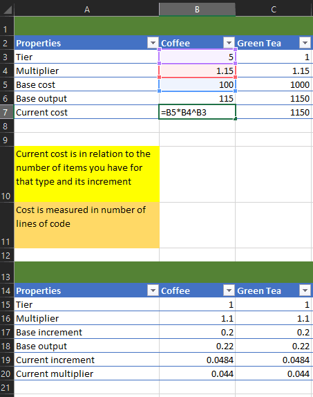

Making an idle game with ReactJS
Uploaded on 26th January, 2021. Read time: 13m
FTo take my mind off of university for a short moment, I did what I usually do when I have room in my thoughts for anything else. If you didn't guess judging from my past posts, I entered a chill game jam to learn how to make an incremental/idle/autoclicker prototype. I don't like to use the word 'game' during jams/competitions since the approach I have is to try and learn something new as quickly as possible rather than making a rushed, finished product. After the event is when I decide whether pursuing the concept is worth it or not. The game jam was hosted at itch.io by the speakers of the Coding Blocks podcast which I like to listen to in my free time.
I think it was while I was playing cookie clicker and the Kittens Game by bloodrizer that I developed an interest in that genre, and that was a while back. It also kind of reminded me of the Facebook games like Farmville and Ikariam, although there was more interaction and complexity there. Generally you wait until you perform actions and accumulate currency while doing so while in the former games I mentioned it's a whole lot different gameplay. The game jam was for around five days and had a USA-centered time zone, so I was more relaxed. On top of that, I wasn't interested in the theme because I needed the jam as an excuse for making something new with a deadline to keep it in check. Since a lot of idle games are made for the web platform, I thought I might go for that as well and tried out ReactJS to designing the game around since I heard good things about it. I was also going for a clear interface look similar to that of Swarm Simulator (which is really cool).

The game's theme is that you're helping this programmer bango cat type on the keyboard to write lines of code (LoC) and by writing more code you can get to upgrade the cat's ability to write code. You can also reach milestones for the cat having written a whole lot of code. It's really simple and doesn't have anything outstanding which made it achievable for a few days with little to no experience with ReactJS. In terms of design, I got to play around with excel tables and looking at how other games or frameworks implement rates of accumulating currency relative to tiers and the player's progression such as Idle Game Maker and Cookie Clicker's Wikipedia page about buildings.

I was learning React on the go, so I had an interesting experience for those first five days. You know how in courses they teach you the old and "classic" way of doing things and then show you how green the grass is these days and that you shouldn't do the old stuff anymore. Well the courses I was looking up and the books (Fullstack React - The Complete Guide..) taught classes first, then hooks. So I spent an evening learning how to do the same things twice but obviously how to do it better the second time (」°ロ°)」. I learned about JSX, classes, state, hooks, how to use components, a little about context, structuring my project/components, React ecosystem and so on. It was really fun and making a game with a UI/view? centered framework with JS was harder than how I think I would do it in Unity, but of course, there is a lot of options for creating interfaces with web tools compared to Unity which is why I think many developers first try that route. Also probably because that genre was born out of web/flash games of old. The root of my project React is as such:
// Dependancies
import React from 'react';
import ReactDOM from 'react-dom';
// Fontawesome
import { library } from '@fortawesome/fontawesome-svg-core';
import { fab } from '@fortawesome/free-brands-svg-icons';
import { faCode } from '@fortawesome/free-solid-svg-icons';
// Source code
import App from './app/App';
// Semantic-ui and CSS
import 'semantic-ui-css/semantic.min.css'
import './index.css';
library.add(fab, faCode);
ReactDOM.render(
<React.StrictMode>
<App></App>
</React.StrictMode>,
document.getElementById('root')
);
App tag is where the application core is initialized and is then rendered to the #root tag in the html:
<body>
<noscript>You need to enable JavaScript to run this app.</noscript>
<div id="root"></div>
</body>
It's very neat and "tidy" since you can use React component tags to create your DOM/tree and have it change dynamically. ReactDOM will then go on to render <App /> which renders the following:
return (
<div>
<div className='app ui grid container'>
<CodeContext.Provider value={{
total_lines_of_code,
lines_of_code,
lines_of_code_per_second,
incrementLinesOfCodeOnClick,
decrementLinesOfCode,
updateLinesOfCodePerSecond,
fetchUpgrades,
pushMilestoneNotification,
pushUpgradeNotification,
}
}>
<Milestones />
<Programmer />
<Upgrades />
</CodeContext.Provider>
</div>
<ToastContainer />
</div>
);
};
Basically <Milestones /> renders the milestones list, <Upgrades /> the upgrades and so on, you get the point. Each of these components contains logic, so basically they're controllers which have their own views for the lists (<Milestone /> and <Upgrade />) and they manage that logic while <App /> manages the global logic such as notifications and the currency. I feel like the structure and how state is managed in this prototype is not efficient and although it works, I wouldn't do it exactly the same given my insights. Views like <Notification /> are simple (warning: syntax highlighting for JSX?):
const Notification = (
{ closeToast, title, description, icon, lines_of_code, role }) => {
const color = role === 'success' ? 'green' : 'red';
const button_text = role === 'success' ? 'Sweet!' : 'Close'
return <div className='notification'>
<div className='content'>
<div className='icon'>{icon}</div>
<div className='header'>
<div className='title'>{title}</div>
<div className='meta'>{lines_of_code}</div>
</div>
<div className='description'>
{description}
</div>
<div className='extra content'>
<div className='ui buttons'>
<div
className={`ui inverted ${color} button`}
onClick={closeToast}>
{button_text}
</div>
</div>
</div>
</div>
</div>
};
but the <Upgrade /> and <Milestone /> are many lines of code and feel dirty to look at since they have to handle pointer/tap input and update button parameters dynamically. I struggled the most with state logic, since I have little experience in creating React apps and I don't know how appropriate they are for idle games compared to other frameworks or simply going vanilla and a lot of times it depends on how fast or efficient and elegant you want it done and if others tried it already. My state/render logic is all over the place and is not very optimized, but I'm glad I was able to make things work somewhat.